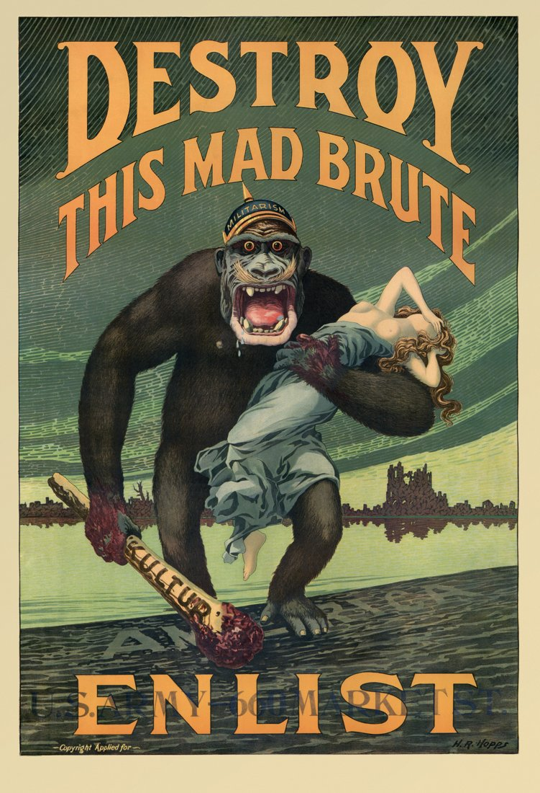
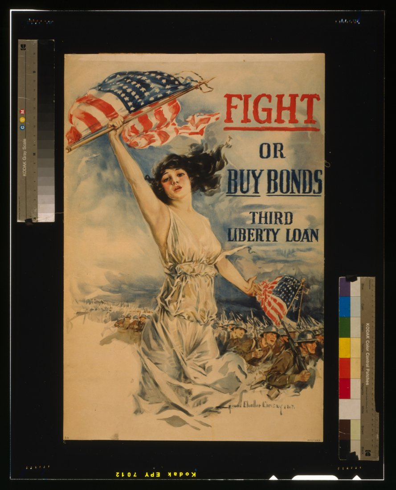

Directions: Work through all five stations. At each one, record what the government asked of Americans and what power it used to get it. You will render a verdict at the end on where, in your judgment, the government crossed a line, and you will need a document to prove it.
Source: Poster by Harry R. Hopps, printed for the United States Army, 1917. Library of Congress. The Committee on Public Information distributed posters of this kind across the country.

The poster text reads, in full: DESTROY THIS MAD BRUTE / ENLIST / U.S. ARMY. Germany is not shown as a government, an army, or a people. It is shown as an animal carrying off a woman, with ruined buildings behind it.
What does the poster ask the viewer to feel, and what does it ask the viewer to do? Name two specific details that do each job.
The committee said its work was education. What can a viewer not learn from this poster, and why would leaving it out make enlistment easier?
Source: Espionage Act of 1917, Section 3, Statutes at Large, vol. 40, p. 217, and Sedition Act of 1918, Statutes at Large, vol. 40, p. 553. Quoted verbatim, including the spelling wilfully in the 1917 text.
From the Espionage Act (1917): "Whoever, when the United States is at war, shall wilfully make or convey false reports or false statements with intent to interfere with the operation or success of the military or naval forces of the United States or to promote the success of its enemies and whoever when the United States is at war, shall wilfully cause or attempt to cause insubordination, disloyalty, mutiny, refusal of duty, in the military or naval forces of the United States, or shall wilfully obstruct the recruiting or enlistment service of the United States, to the injury of the service or of the United States, shall be punished by a fine of not more than $10,000 or imprisonment for not more than twenty years, or both."
From the Sedition Act (1918), amending the same section: whoever "shall willfully utter, print, write, or publish any disloyal, profane, scurrilous, or abusive language about the form of government of the United States, or the Constitution of the United States, or the military or naval forces of the United States, or the flag of the United States, or the uniform of the Army or Navy of the United States" faced the same fine and prison term. The words before and after this clause are cut; the clause itself is complete.
The 1917 text punishes false statements and obstruction. What new kind of act does the 1918 clause punish, and which words in the clause show the change?
Under the 1918 clause, could a newspaper editorial calling the draft law unjust be prosecuted? Answer from the words of the clause, not from your opinion of the law.
Source: Labeled summary of the case, with a verbatim passage from the opinion in Schenck v. United States, 249 U.S. 47 (1919). The ellipsis marks a cut, disclosed here: one sentence between the two quoted passages is omitted.
Charles Schenck, general secretary of the Socialist Party, was convicted under the Espionage Act for mailing about 15,000 leaflets to men who had been drafted. The leaflets argued that the draft violated the Thirteenth Amendment and urged readers to assert their rights. Schenck argued that the First Amendment protected the leaflets. A unanimous Supreme Court, in an opinion by Justice Oliver Wendell Holmes, upheld the conviction. Holmes wrote:
"The most stringent protection of free speech would not protect a man in falsely shouting fire in a theatre and causing a panic. ... The question in every case is whether the words used are used in such circumstances and are of such a nature as to create a clear and present danger that they will bring about the substantive evils that Congress has a right to prevent."
State the clear and present danger test in your own words. What two things must the government show about the words and the circumstances?
Holmes admitted that the same leaflet could be protected in ordinary times. What, in his reasoning, changed the result during the war?
Source: Poster by Howard Chandler Christy for the Third Liberty Loan, 1917, Library of Congress (LCCN 2002708939), and the text of a Second Liberty Loan poster, 1917, as cataloged by the Library of Congress.

A Second Liberty Loan poster of 1917 carried this line from Secretary of the Treasury William G. McAdoo: "Shall we be more tender with our dollars than with the lives of our sons?" Bond buyers lent the government money and were repaid with interest. Sales in the five loan drives totaled roughly 17 billion dollars.
The Christy poster gives the viewer two options. What are they, and what does the poster imply about a person who chooses neither?
McAdoo compares dollars with lives. Why is that comparison such strong pressure, and is it an argument about money or about character? Defend your answer from the sentence.
Source: Emmett J. Scott, Negro Migration During the War, United States Department of Labor, 1920. Quoted verbatim from the 1920 edition. Ellipses mark cuts, and the spelling and capitalization are those of the original.
"Within the brief period of three years following the outbreak of the great war in Europe, more than four hundred thousand negroes suddenly moved north. ... But by far the most potent factor in effecting the movement was the treatment received by negroes at the hands of the South. More specifically, as expressed by the leaders of the movement and refugees themselves, they were a long series of oppression, injustice and violence extending over a period of fifteen years; the convict system by which the courts are permitted to inflict heavy fines for trivial offenses and the sheriff to hire the convicts to planters on the basis of peonage; denial of political rights; ... a system of cheating by landlords and storekeepers which rendered it impossible for tenants to make a living, and the inadequacy of school facilities."
Scott was a Black official, formerly Booker T. Washington's secretary, writing the federal government's own study of the migration.
Scott names the most potent factor in the migration. What is it, and how does his answer differ from saying that northern factory wages caused the movement?
Why does it matter that this account was written by a Black official for the federal government, rather than by a northern newspaper? Name one thing his position let him record and one limit it may have placed on him.
The government defended every measure in these stations as necessary to win the war. Choose the one station where you judge that the government crossed a line, and the one station where you judge that it stayed within its proper wartime powers.
Crossed a line: Station ______
Within its powers: Station ______
Defend both choices in a short paragraph. Quote or name the document that proves each judgment, and answer the strongest argument for the opposite verdict on your crossed a line station.
What does the poster ask the viewer to feel, and what does it ask the viewer to do? Name two specific details that do each job. Feel: fear and hatred of an enemy presented as a beast, through the gorilla itself, the bloodied club, the struggling woman, and the burning ruins. Do: enlist, stated directly in the text ENLIST / U.S. ARMY, and framed as destruction, DESTROY THIS MAD BRUTE. Award credit for any two accurate details per job.
The committee said its work was education. What can a viewer not learn from this poster, and why would leaving it out make enlistment easier? A viewer cannot learn anything about the actual war: its causes, the German government or army, German soldiers as people, or the costs of enlisting. A monster requires no explanation and permits no sympathy or hesitation. Replacing an enemy of soldiers and civilians with a beast turns a political decision into self defense, which is the easier case to make.
The 1917 text punishes false statements and obstruction. What new kind of act does the 1918 clause punish, and which words in the clause show the change? The 1918 clause punishes speech itself: to utter, print, write, or publish language that is disloyal, profane, scurrilous, or abusive about the government, the Constitution, the armed forces, the flag, or the uniform. The showing words are the adjectives and the list of protected subjects. Truth is no defense under the clause as quoted, and no obstruction need be proved.
Under the 1918 clause, could a newspaper editorial calling the draft law unjust be prosecuted? Answer from the words of the clause, not from your opinion of the law. Yes, on the words of the clause. An editorial is printed and published, and calling a federal war law unjust can be charged as disloyal or abusive language about the form of government. Students should note that prosecution depended on officials choosing to bring the case, which is part of how the law worked in practice: more than two thousand cases were brought under the two acts.
State the clear and present danger test in your own words. What two things must the government show about the words and the circumstances? Speech may be punished when the words, in the circumstances in which they are used, create a clear and present danger of bringing about an evil that Congress has the power to prevent. The government must show the nature of the words and the circumstances: proximity and degree, in Holmes's terms, not merely that officials dislike the message.
Holmes admitted that the same leaflet could be protected in ordinary times. What, in his reasoning, changed the result during the war? The circumstances. In wartime, Holmes reasoned, words urging resistance to the draft threaten an obstruction Congress may prevent, and they threaten it immediately, while men are being called. The character of an act depends on the circumstances in which it is done, so the identical leaflet is protected speech in peace and a punishable danger in war.
The Christy poster gives the viewer two options. What are they, and what does the poster imply about a person who chooses neither? Fight, by enlisting, or buy bonds, by lending. The poster leaves no third position: a person who does neither is placed outside the national effort, failing the soldiers shown beneath the flag. The implication is carried by the either or structure, not stated in words, and students should name that structure.
McAdoo compares dollars with lives. Why is that comparison such strong pressure, and is it an argument about money or about character? Defend your answer from the sentence. The sentence prices a son's life against a bond buyer's dollars and asks which the buyer is more tender with. Refusing to buy becomes proof of valuing money above soldiers' lives. It is an argument about character: it supplies no interest rate, term, or risk, the facts a money argument would need, and instead makes the purchase a test of loyalty. Accept a money reading only if the student answers the absence of financial terms.
Scott names the most potent factor in the migration. What is it, and how does his answer differ from saying that northern factory wages caused the movement? The treatment received by Black people at the hands of the South: oppression, injustice, and violence, specified as the convict system and peonage, denial of political rights, cheating by landlords and storekeepers, and inadequate schools. A wages answer names a pull. Scott, while recording the scale of more than four hundred thousand migrants in three years, names a push as the most potent factor: people were driven out, not only drawn away.
Why does it matter that this account was written by a Black official for the federal government, rather than by a northern newspaper? Name one thing his position let him record and one limit it may have placed on him. His position let him record the migrants' own stated reasons, gathered as an official inquiry, and put the federal government's name behind a finding that blamed southern treatment. A limit: he wrote for the Department of Labor that employed him, in a report meant for officials, which could press his language toward the measured and the documentary. Accept any limit grounded in his audience and employer.
Verdicts will vary. Full credit should be awarded if the student:
Teacher note. Station 5 is the control case: the government appears there as an investigator recording a change it did not direct. Students who place Station 5 in either column should be pressed on what government action they are judging. That confusion, surfaced, is a useful discussion opener.